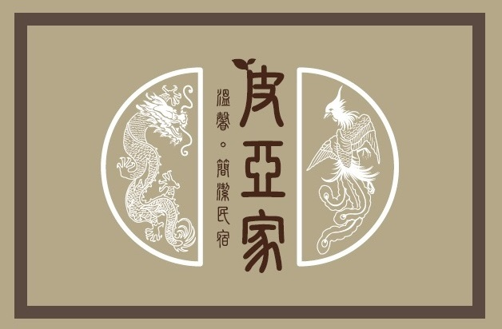

關於皮亞家 (民宿)
不在家鄉,也有個像家的地方

創立皮亞家民宿․40年老屋翻新
熱愛美食、設計、旅行、音樂的男女民宿主人，在2014
年盛夏，集結了他們所有的愛好在自宅－皮亞家民宿，等待和同好們分享。
環保概念整修老屋
台南皮亞家民宿的天花板、牆上塗料和地板材料，全部都使用環保素材製成，各個角落的燈飾，也使用了LED照明，讓旅人們能在低汙染、低耗能的環境中，盡情享受最潔淨舒適的環境。
中西合併的室內空間
在台南皮亞家民宿裡，熱愛異國情調、繽紛色彩的民宿男主人<皮諾>，和鍾情各國傳統文化的民宿女主人<米亞>，把一樓接待區和旅人房間設計出中西合併的風格來。
一樓接待區裡，老上海時代的水晶立燈、祖父留下的古董茶几、老船上的吊燈和古色樸實的壁畫，推疊出幽靜的傳統風情，讓旅人有如回到自己家般輕鬆。往內部走，樓梯間的版畫，營造出淡淡的異國風味，讓人不禁期待，藏在更深處的驚喜。走進房間，映入眼簾的是一連串繽紛的馬卡龍色彩，伴著窗外透進的溫暖陽光，彷彿讓旅人們置身小小歐洲那樣無壓舒適。
一樓接待區裡，老上海時代的水晶立燈、祖父留下的古董茶几、老船上的吊燈和古色樸實的壁畫，推疊出幽靜的傳統風情，讓旅人有如回到自己家般輕鬆。往內部走，樓梯間的版畫，營造出淡淡的異國風味，讓人不禁期待，藏在更深處的驚喜。走進房間，映入眼簾的是一連串繽紛的馬卡龍色彩，伴著窗外透進的溫暖陽光，彷彿讓旅人們置身小小歐洲那樣無壓舒適。